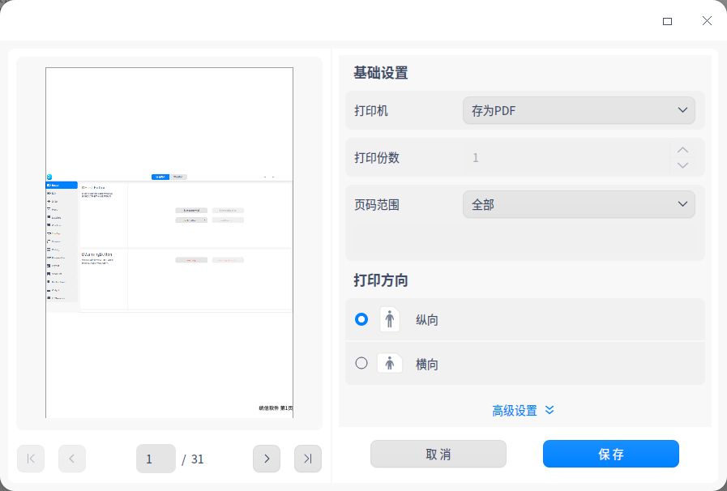

DPrintPreviewDialog Class
class Dtk::Widget::DPrintPreviewDialogDtk 风格的打印预览页面. More...
| Header: | #include <DPrintPreviewDialog> |
| Inherits: | Dtk::Widget::DDialog |
Detailed Description
一个用于创建 Dtk 风格的打印预览页面，通常情况下，只需要 构建一个 DPrintPreivewDialog 对象，并将原始数据绘制 到连接 DPrintPreview::paintRequested 信号的槽函数 中,最后以模态的形式显示就可以正常使用。
dtkwidget 项目的 collection 示例中有对打印预览的简单 示例。简单的讲：打印预览拥有两种预览模式，1. 同步预览模式 ，适用于数据量较小，且更新不太频繁的原始数据中，这种模式下 默认情况下的，打印预览仅会在页面大小或者打印机属性发生变化 时发射 DPrintPreview::paintRequested 信号。2. 异步 预览模式，该模式适用于数据量较大，且更新较频繁的原始数据， 这种模式下，打印预览会频繁触发异步的 DPrintPreview::paintRequested 信号，但每次接收的数据量较小，因此不用担心响应速度的问题。 默认情况下的打印预览窗口为同步模式。
基本使用
该代码在 example 中可以看到，这里简单贴出对应内容.
DPrintPreviewDialog dialog(this);
//测试保存PDF文件名称接口
dialog.setDocName("test");
#ifdef AsynPreview
dialog.setAsynPreview(31);
connect(&dialog, QOverload<DPrinter *, const QVector<int> &>::of(&DPrintPreviewDialog::paintRequested),
#else
connect(&dialog, QOverload<DPrinter *>::of(&DPrintPreviewDialog::paintRequested),
#endif
#ifdef AsynPreview
this, [=](DPrinter *_printer, const QVector<int> &pageRange) {
#else
this, [=](DPrinter *_printer) {
#endif
// 此函数内代码为调试打印内容代码，调整较随意！
_printer->setFromTo(1, 31);
QPainter painter(_printer);
bool firstPage = true;
for (int page = _printer->fromPage(); page <= _printer->toPage(); ++page) {
#ifdef AsynPreview
if (!pageRange.contains(page))
continue;
#endif
painter.resetTransform();
if (!firstPage)
_printer->newPage();
// qApp->processEvents();
// 给出调用方widget界面作为打印内容
double xscale = _printer->pageRect().width() / double(this->width());
double yscale = _printer->pageRect().height() / double(this->height());
double scale = qMin(xscale, yscale);
painter.translate(_printer->pageRect().width() / 2.0, _printer->pageRect().height() / 2.0);
painter.scale(scale, scale);
painter.translate(-this->width() / 2, -this->height() / 2);
this->render(&painter);
painter.resetTransform();
QFont font /*("CESI仿宋-GB2312")*/;
font.setPixelSize(16);
font = QFont(font, painter.device());
QRectF rect = _printer->pageRect();
rect = QRectF(0, 0, rect.width(), rect.height());
painter.setFont(font);
// 画可用页面矩形,提供调试效果参考
painter.drawRect(rect);
QFontMetricsF fontMetrics(font);
QString text = QString("统信软件 第%1页").arg(page);
QRectF stringRect = fontMetrics.boundingRect(text);
//添加页脚页面信息
painter.drawText(QPointF(rect.bottomRight().x() - stringRect.width(), rect.bottomRight().y() - stringRect.height()),
QString("统信软件 第%1页").arg(page));
firstPage = false;
}
});
dialog.exec();
示例的预览效果如下：

上述代码中用宏 AsynPreview 控制是否使用异步模式，并且通过 分别连接两种模式的 DPrintPreview::paintRequested 信号 将原始数据绘制到打印机 printer 中。需要注意的是，异步模式下 该信号会传递一个 pageRange 的页码数据，这个数据里面会放置 本次重绘需要展示的页面，应用可以根据原始数据，动态提供对应 页码的数据给打印预览。同样地，在打印预览最后打印的阶段，也会 根据用户选择的页码多少，向外获取对应页码的原始数据。
Warning: pageRange 对应的数据为页码值，而非页面索引值！
其他接口
除同步和异步接口之外，打印预览还提供给外部一些其他接口，例如 setDocName 设置数据文件名，在输出 pdf 或者图片时可以看到 效果。 setPrintFromPath 按照文件路径打印的接口，使用这个 接口将文件的路径传递给打印机，打印预览会在用户点击打印按钮后 将该路径和用户操作的属性直接传递给打印机，而不通过打印预览进行 中间处理，需要注意的是，使用了这个接口后，仍需要通过DPrintPreview::paintRequested 信号传递原始数据，并且，由于使用该接口后，属性操作完全取决于打印机 ，因此部分打印预览的高级功能会禁用。